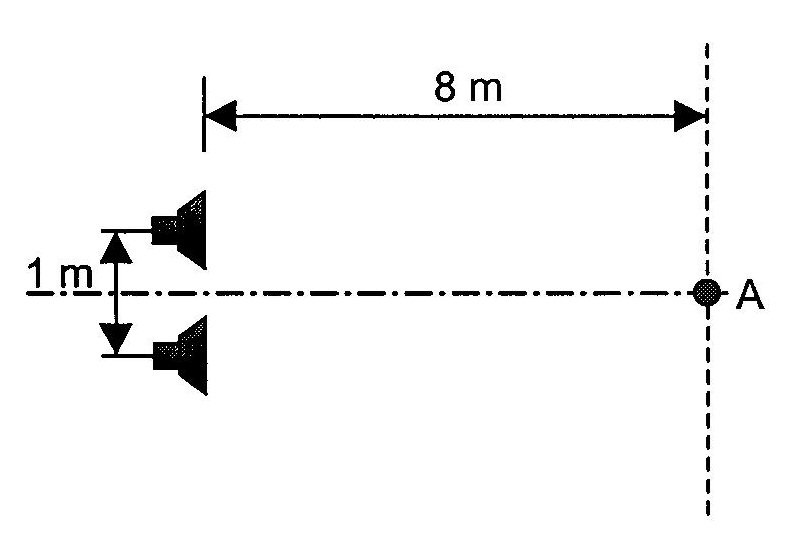

Een massa van 1 kg voert een harmonische beweging uit, beschreven door volgende
vergelijking: (S.I.-eenheden)
a) Maak een schets van x(t).
b) Zoek de periode en de frequentie van de trilling .
c) Bepaal de maximale snelheid en de snelheid op het ogenblik t = 1 s.
Een massa van 5 kg hangt aan een veer (k = 500 N/m).
De massa wordt op het ogenblik t = 0 telkens op een andere manier in beweging gebracht:
a) x0 = 0 cm en v0 = 1 m/s
b) x0 = 10 cm en v0 = 0 m/s
c) x0 = 10 cm en v0 = 1 m/s
d) x0 = -10 cm en v0 = -1 m/s
e) x0 = -10 cm en v0 = 1 m/s
Een zeilbootje ligt voor anker in een haven en dobbert heen en weer op het ritme van de zee. Het eindpunt van de 25 m hoge mast beschrijft een harmonische beweging omheen de vertikale, met een amplitude van 2,5 m en een periode van 5,0 s.
a) Bereken de frequentie van de oscillatie.
b) Bereken de snelheid bij het passeren van de evenwichtsstand.
c) Zoek de versnelling van het uiteinde van de mast bij x = 2,5 m.
In een haventje is het water slechts 90 cm diep bij laag water. Bij hoog water is de diepte 2,10 m. De laagwaterstand had plaats om 8h 50min. Om 9h 10min wil een zeilschip met diepgang 1,50 m het
haventje binnenvaren. Als we veronderstellen dat het waterniveau een sinusoïdale functie is van de tijd, hoe lang moet de zeiler dan wachten om het haventje zonder risico binnen te kunnen varen ?
(Neem 30 cm als veiligheidsmarge bovenop de diepgang en neem aan dat er 2 volledige getijdecycli zijn per 24 h).
Een massa van 500 g hangt aan een veer (k = 120 N/m) en voert een harmonische trilling uit. De massa bevindt zich op het ogenblik t = 0 op de plaats x0 = 0,3 m met een beginsnelheid v0 = 6 m/s.
a) Bepaal de periode van de trilling.
b) Schrijf de bewegingsvergelijking x(t) voor de massa op.
Twee mensen hebben samen een massa van 125 kg en stappen tegelijk in een oude wagen met versleten
schokdempers. De vering wordt hierbij met 8,00 cm ingedrukt. Ze rijden voort en als de wagen op een slecht stuk in de weg komt oscilleren ze op en neer met een periode van 1,65 s.
a) Zoek de totale massa (auto + passagiers) opgehouden door de vering.
b) Bepaal de massa van de wagen.
Ze stoppen bij een bouwfirma, laden 4 zakken cement (elk van 50 kg) in de wagen en rijden terug.
c) Met hoeveel cm wordt de vering van de wagen ingedrukt bij de terugrit (in vergelijking met de lege wagen) ?
d) Zoek de periode waarmee ze nu op en neer oscilleren over het slechte wegdek.
We hangen een kogel van 60 gram aan een verticaal opgehangen (massaloze) veer, die hierdoor y0 mm uitrekt. Vervolgens tilt men de kogel 50 mm naar boven en laat hem daarna los (tijdstip t=0). De eigenfrequentie waarmee het systeem kogel-en-veer trilt is 2,5 Hz.
a) Bereken y0.
b) Stel de bewegingsvergelijking x(t) op voor de trillende kogel.
c) Bereken de uitwijking, de snelheid en de terugdrijvende kracht op de kogel na 2,5 s en na 11/4 s.
d) Bereken de trillingsfrequentie van het kogelenveersysteem, indien de kogel van 60 g wordt vervangen door een kogel van 85g.
Een gewicht met een massa van 75 g hangt aan een (massaloos veronderstelde) veer.
Het gewicht kan beschouwd worden als een puntmassa. We brengen het gewicht 8 mm
omlaag en laten het dan los op het ogenblik t = 0. De frequentie van de trilling bedraag 10 Hz.
a) Bereken de veerconstante van de veer.
b) Hoe groot is de veerkracht op het ogenblik t = 0 ?
c) Zoek de vibratie-energie van het gewicht.
d) Bereken de uitwijking, de snelheid en de versnelling van het gewicht op t=1/12 s.
e) Op welke tijdstippen bedraagt de uitwijking x = -4 mm ?
Een wiskundige slinger heeft een periode van 1,5 s. De slingermassa is gelijk aan 1 kg en de hoekamplitude is gelijk aan 0,08 rad. Bereken de lengte van de slinger en de maximale spanning in het touw.
Een ijzeren bol (m = 100 kg) hangt aan een (massaloos veronderstelde) 20 m lange kabel van een kraan en wordt gebruikt bij afbraakwerken. We beschouwen de bol als een puntmassa. De bol wordt losgelaten op het ogenblik dat de kabel een hoek van 20° met de verticale richting maakt.
a) Bepaal de periode van de slingerbeweging.
b) Zoek de snelheid van de bol in het laagste punt van de baan.
c) Bereken de totale energie van de bol.
d) Zoek de maximale spankracht in de kabel.
Een mathematische slinger heeft een periode van 2 s en een hoekamplitude van 2°.
Na 10 volledige trillingen is de amplitude 1,5°. Bereken de dempingskonstante \(\gamma\).
Geef de wiskundige vergelijking van een rechtslopende golf met volgende eigenschappen:
Bij ultrasone beeldvorming worden geluidsgolven gebruikt met frequenties boven het voor de mens hoorbare gebied. Voor duidelijke beeldvorming bij een echografie is een golflengte van \(1.0~\text{mm}\) in het weefsel aangewezen. De snelheid van geluidsgolven in menselijk weefsel bedraagt \(1500~\text{m/s}\).
a) Bepaal de frequentie van de transducer die de ultrasone geluidsgolven produceert.
b) Zoek de periode van deze geluidsgolven.
c) Bereken het golfgetal in het menselijk weefsel.
d) Bepaal de maximale deeltjessnelheid in menselijk weefsel indien de amplitude van de ultrasone golven in het weefsel \(10^{-8}~\text{m}\) bedraagt.
Een sinusoïdale golf met frequentie van 500 Hz, loopt met een snelheid van 360 m/s.
a) Wat is de kortste afstand tussen twee punten die met een faseverschil van 60° variëren?
b) Wat is het faseverschil tussen de storingsverandering in eenzelfde punt op 10-3 s tijdsverschil?
Een transversale golf in een touw is gegeven door D(x,t) = $A sin($k x - $w t), met D en x in m en t in s. Wat zijn op t = $t s de verplaatsing en de snelheid in het punt van het touw waar x = $x m ?
Let op:
hou rekening met het teken: D en v kunnen positief of negatief zijn.
Een touw bestaat uit twee stukken met lineaire dichtheden van 0,10 kg/m en 0,20 kg/m, zoals in de onderstaande figuur. Een invallende golf, gegeven door , met x in meter en t in seconden, loopt door het lichtste stuk touw.
Part A
Wat is de golflengte in het lichtste gedeelte van het touw?
Part B
Wat is de spanning in het touw?
Part C
Wat is de golflengte wanneer de golf in het zwaarste gedeelte loopt?
Stalen spoorrails worden op defecten getest met behulp van een ultrasone probe, die bovenop de rail wordt geplaatst. De probe gedraagt zich zowel als zender, als als ontvanger. De probe wordt verbonden met een oscilloscoop, waarop zowel het uitgezonden als het ontvangen teruggekaatste signaal zichtbaar is. Gedurende 1 milliseconde wordt een ultrasone golf van 3,0 MHz uitgezonde (linkse puls op het eerste diagram) en daarna wordt de teruggekaatste golf (rechtse puls op het eerste diagram) gedetecteerd. De massadichtheid van staal is \(\rho_{\text{staal}} = 8~\mathrm{g/cm^3}\) en de elasticiteitsmodulus van staal bedraagt \(E_{\text{staal}} = 200\cdot 10^9~\mathrm{N/m^2}\).
a) Bereken de diepte van de spoorrail uit de informatie op het scherm van de oscilloscoop
(1ste diagram).
b) Bereken de golflengte van de elastische golven opgewekt in de stalen rail.
c) Denkvraag: Als de probe op een andere plaats van de rail wordt gezet, zien we een patroon met drie pieken op de oscilloscoop. Wat kun je uit dit tweede diagram concluderen?
Een stalen buis is \(60~\mathrm{m}\) lang, de dichtheid van staal is \(7{,}6~\mathrm{g/cm^3}\) en de elasticiteitsmodulus \(2\cdot 10^{11}~\mathrm{N/m^2}\). Jens klopt met een hamer op het uiteinde van de buis. Een persoon aan de andere kant hoort twee longitudinale golven: één door het metaal en één door de lucht. Bereken het tijdsverschil tussen de twee golven. \(v_{\text{geluid}}\) in lucht is \(340~\mathrm{m/s}\).
Een rubberen slang, \(5~\mathrm{m}\) lang, met een massa van \(0{,}6~\mathrm{kg}\), ondervindt een trekkracht van \(19{,}62~\mathrm{N}\). Een transversale harmonische golf doorloopt de slang; de golflengte is \(30~\mathrm{cm}\) en de uitwijkingsamplitude \(0{,}1~\mathrm{cm}\).
a) Wat is de voortplantingssnelheid van de golf ?
b) Hoe groot is de maximale deeltjessnelheid ?
Een alpinist (\(m = 70~\mathrm{kg}\)) hangt aan het uiteinde van een nylon touw, \(28~\mathrm{m}\) onder een overhangende bergwand. De massa van het touw is \(1{,}3~\mathrm{kg}\).
De alpinist zendt vanuit zijn netelige positie een golfpuls uit op het touw.
Hoe lang duurt het voordat deze golfpuls de bergwand bovenaan bereikt?
Een stalen snaar (\(\rho = 7800~\mathrm{kg/m^3}\)) heeft een doorsnede van \(2~\mathrm{mm^2}\) en is aan één kant vastgemaakt aan het been van een stemvork (\(440~\mathrm{Hz}\)). Het andere uiteinde hangt over een katrol en draagt een last van \(200~\mathrm{kg}\). Brengt men de stemvork aan het trillen, dan zal een transversale golf zich voortplanten in de snaar.
a) Zoek de golfsnelheid.
b) Bepaal de kortste afstand tussen 2 punten op de snaar, die onderling bewegen met een faseverschil van \(60^\circ\).
c) Het been van de stemvork (plaats \(x = 0\)) trilt met een amplitude van \(0{,}5~\mathrm{cm}\) en gaat door zijn evenwichtsstand met een positieve snelheidsprojectie op het ogenblik \(t = 0\). Schrijf de vergelijking \(D(x,t)\) op van de lopende transversale golf in de snaar en bereken de snelheid en de versnelling van een punt van de snaar, gelegen op \(80~\mathrm{cm}\) van de stemvork op het tijdstip \(t = 10~\mathrm{s}\).
Een staande golf wordt gevormd door interferentie van twee lopende golven, elk met een amplitude A = cm , golfgetal k = /2 cm-1 en cirkelfrequentie = 10 rad/s .
a) Bereken de afstand tussen 2 opeenvolgende knopen.
b) Zoek de amplitude van de staande golf bij x = 0,25 cm.
Een celliste meet de lengte van de la-snaar (220 Hz) van haar cello van bovenaf tot aan de brug (het deel van de snaar dat vrij kan vibreren) en vindt 60,0 cm. De snaar heeft een massa per lengte-eenheid van 3,3 g/m. Op welke afstand van de brug moet ze haar vinger zetten op deze snaar opdat een mi (329,6 Hz) zou weerklinken ?
Een metalen draad is horizontaal opgespannen. Het ene uiteinde is aan een muur bevestigd, het andere hangt vrij over een katrol en is voorzien van een gewicht W. Langs de draad plant zich een transversale golf voort waarvan de frequentie fo is. Deze draad heeft een lengte l, van de muur tot aan de katrol, en het gewicht van het trillend gedeelte van de draad is w. Hoe groot moet het gewicht W zijn opdat er een staande golfpatroon zou ontstaan met N knopen ? (De knopen aan de uiteinden van de draad niet meegerekend). Gegevens : N = 5 ; fo = 60 Hz ; w = 0,08 N ; l = 0,6 m.
Als Peter een re (588 Hz) blaast op zijn trompet, brengt dit een snaar van zijn gitaar met een grote amplitude in resonantie. De snaar trilt dan volgens de tweede boventoon. De lengte van het vibrerende deel van de snaar meet 63,5 cm. Bereken de snelheid van de transversale golven in deze snaar
Wat is de lengteverhouding van twee orgelpijpen, als de eerste boventoon van de ene, die gesloten is, dezelfde frequentie heeft als de grondtoon van de andere, die open is ?
De eerste boventoon van een open orgelpijp en de eerste boventoon van een gesloten orgelpijp hebben eenzelfde frequentie. De grondtoon van de open pijp is 300 Hz. Zoek de lengte van de beide orgelpijpen. vgeluid = 340 m/s.
Door middel van een sirene brengt men geluid voort met een frequentie van 1000 Hz. Men vergelijkt dit geluid met de grondtoon van een gesloten orgelpijp met een lengte van 25/3 cm , welke wordt aangeblazen met lucht van 20°C. Bereken het aantal zwevingen per seconde dat men waarneemt, als de voortplantingssnelheid van het geluid in lucht bij 20°C 330 m/s bedraagt.
Een pianostemmer gebruikt een stemvork van 440 Hz om een piano te stemmen. Als hij deze stemvork gelijktijdig met de noot la van de piano aanslaat, hoort hij 2 zwevingen per seconde. De zwevingsfrequentie vermindert als de spanning van de snaar wordt verhoogd. Zoek de oorspronkelijke frequentie van de pianosnaar.
Een schip is uitgerust met een sonar-systeem, dat geluidsgolven uitzendt met een frequentie van 22,00 kHz.
a) Bepaal de golflengte van deze geluidsgolven in lucht (snelheid van het geluid in lucht = 340 m/s).
b) Bepaal de golflengte van deze geluidsgolven in zeewater (snelheid van het geluid in zeewater = 1482 m/s).
c) Een walvis zwemt recht naar het schip met een snelheid van 4,95 m/s. Het schip zelf ligt in rust op het wateroppervlak. Zoek de frequentie van de geluidsgolven die na terugkaatsing aan de walvis terug ontvangen worden op het schip.
Twee geluidsbronnen A en B produceren dezelfde frequentie van 500 Hz. A staat stil en B beweegt naar A toe, met een snelheid van 120 km/h. Een waarnemer verplaatst zich op de lijn AB en verwijdert zich van A, naar B toe, met een snelheid van 60 km/h. νgeluid = 340m/s.
a) Welke frequentie hoort de waarnemer van bron A?
b) Welke frequentie hoort de waarnemer van bron B?
Een vleermuis vliegt met een snelheid van 5,0 m/s naar de wand van een grot en zendt een geluidssignaal uit van 40,0 kHz.
a) Zoek de frequentie van het signaal dat door de vleermuis terug ontvangen wordt na reflectie aan de wand van de
grot. (vgeluid = 340 m/s)
Dezelfde vleermuis achtervolgt met een snelheid van 5,0 m/s een mot, die van de vleermuis weg vliegt (alle snelheidsvectoren liggen op 1 rechte). De vleermuis stoot een geluidssignaal van 40,0 kHz uit en ontvangt een echosignaal na terugkaatsing aan de mot van 40,4 kHz.
b) Bereken de snelheid waarmee de mot zich van de vleermuis verwijdert.
Iemand bevindt zich tussen 2 identieke trillende stemvorken (f = 400 Hz). Met welke
snelheid moet hij naar één ervan gaan om 2 zwevingen per seconde te horen ?
νgeluid = 340 m/s.
Bij een echografie plant een geluidsgolf van 2,00 MHz zich voort doorheen de baarmoeder van een zwangere vrouw. De geluidsgolf kaatst terug aan de bewegende hartwand van de
foetus, op het ogenblik dat de hartwand naar de detector toe beweegt. Het aanvankelijk uitgestuurde en het teruggekaatste signaal worden samengesteld in de detector en men vindt 85 zwevingen per seconde. Bereken de snelheid van de bewegende hartwand op het betrokken meetmoment. vgeluid = 1500 m/s in menselijk weefsel.
Een geluidsbron heeft een frequentie van 1000 Hz. De voortplantingssnelheid van het geluid in lucht is 330 m/s.
a) Hoe hoog is de toon, die een stilstaande waarnemer hoort, als de bron stilstaat ?
b) Hoe hoog is de toon, die een bewegende waarnemer hoort, als hij met een snelheid van 165 m/s de stilstaande bron tegemoet gaat ?
d) Hoe hoog is de toon, die de waarnemer hoort, als hij met een snelheid van 330 m/s de stilstaande bron tegemoet gaat ?
e) Hoe hoog is de toon, die een stilstaande waarnemer hoort, als de bron met een snelheid van 330 m/s nadert ?
f) Welke toonhoogte hoort de waarnemer, als hij zich met een snelheid van 330 m/s van de stilstaande bron verwijdert ?
g) Welke toonhoogte hoort de stilstaande waarnemer als de bron zich met een snelheid van 330 m/s van hem verwijdert ?
h) Welke toonhoogte hoort de waarnemer, als waarnemer en bron met dezelfde snelheid naar links bewegen ?
Twee luidsprekers staan tegenover elkaar op een lorrie die met 10,0 m/s een stilstaande waarnemer passeert, zoals weergegeven in de figuur. Als de luidsprekers identieke geluidsfrequenties van $f Hz weergeven, wat is dan de zwevingsfrequentie die een waarnemer hoort ?
(T= 20°C°)

vanuit A?
vanuit B?
vanuit C?
In het twee-spletenexperiment van Young gebruikt men licht met een golflengte van 490 nm. Het interferentiemaximum van 6de orde ligt op 38 mm van het centrale maximum op een scherm dat 2,2 m van de spleten verwijderd is. Wat is de afstand tussen de twee spleten ?
In het interferentiepatroon afkomstig van twee spleten is de afstand tussen de maxima van 4de orde (langs weerszijden van het centrale maximum) gelijk aan 7 cm. Als de afstand tussen de spleten 0,2 mm is en het scherm 3 m achter de spleten staat, wat is dan de golflengte van het gebruikte licht ?
Twee smalle spleten staan 0,2 mm van elkaar. Het 5de interferentieminimum ligt onder een hoek van 0,7° ten opzichte van het centrale maximum. Wat is de golflengte van het gebruikte licht ?
Twee spleten staan 0,24 mm van elkaar en worden belicht met licht waarin twee golflengtes voorkomen : 480 nm en 560 nm. Men neemt een dubbel interferentiepatroon waar op een scherm dat 1,2 m achter de spleten staat. Wat is de eerste positie ten opzichte van het centrale maximum waarvoor de maxima van de twee golflengtes precies samenvallen ?
Twee luidsprekers staan 1 m van elkaar en sturen een toon uit van 1000 Hz in fase. Een waarnemer loopt op een lijn evenwijdig met de lijn die de luidsprekers verbindt, en 8 m ervan verwijderd. Als hij vertrekt vanuit de symmetrische positie, welke afstand moet hij dan afleggen opdat hij het signaal niet meer zou horen ? De geluidssnelheid is 340 m/s.

De twee luidsprekers in de figuur zenden dezelfde toon uit met een faseverschil van π rad. De frequentie is 500 Hz. Wat is de minimale waarde voor d opdat de intensiteit in P maximaal zou zijn? De geluidssnelheid is 340 m/s.
De luidsprekers in onderstaande figuur zenden dezelfde toon uit, zonder faseverschil. De afstand d tussen de luidsprekers bedraagt 2 m. Wat is de kleinste frequentie waarvoor de intensiteit in P (a) maximaal is; (b) minimaal is? De geluidssnelheid is 340 m/s.
Monochromatisch licht dat op twee spleten valt met een onderlinge afstand van $d mm levert de vijfdeordefranje op onder een hoek van °. Wat is de golflengte (in nm) van het gebruikte licht?
Televisie- en radiogolven die weerkaatsen tegen bergen of vliegtuigen, kunnen interfereren met het rechtstreekse signaal van het station.
Deel A
Welke interferentie treedt er op wanneer 75 MHz-televisiesignalen rechtstreeks een ontvanger bereiken van een station veraf, en ook worden gereflecteerd door een vliegtuig dichtbij, 122 m recht boven de ontvanger? Ga uit van een faseverschuiving van van het signaal na reflectie.
Antwoord:
Deel B
Welk type interferentie zal er optreden als het vliegtuig zich 22m dichter bij de ontvanger bevindt?
Antwoord:
Een dunne laag MgF2 (n = 1,38) met een dikte van 8,3.10-5 cm ligt op glas (n = 1,6). Indien wit licht loodrecht invalt op het oppervlak, welke golflengtes worden dan niet weerkaatst ? Geef alleen maar die golflengten die in het zichtbaar gebied liggen, tussen 400 en 700 nm.
Een dunne oliefilm (n = 1,22) met een uniforme dikte van 450 nm drijft op water (n = 1,33). Wit licht valt loodrecht in op de oliefilm. Welke golflengten van het weerkaatste licht worden (a) versterkt ; (b) uitgedoofd
De optische telescoop op Mount Palomar heeft een diameter van \(5{,}08~\mathrm{m}\). Als men twee voorwerpen op de maan van elkaar wil onderscheiden met licht met een golflengte van \(550~\mathrm{nm}\), wat moet dan de minimale afstand ertussen zijn? De maan is \(3{,}84\cdot 10^5~\mathrm{km}\) van de aarde verwijderd.
Een spionagesatelliet beweegt in een baan op 200 km hoogte en is uitgerust met een spiegel met een diameter van 50 cm. Wat moet de minimale afstand zijn tussen twee voorwerpen op het aardoppervlak opdat ze door de satelliet nog onderscheiden zouden kunnen worden ? Neem = 400 nm en veronderstel dat diffractie de enige beperkende factor is voor het oplossend vermogen.
Laserlicht met een golflengte van 680 nm valt loodrecht in op een spleet met een breedte van 0,06 mm. We bekijken het patroon dat afgebeeld wordt op een scherm dat 1,8 m achter de spleet staat.
a) Wat is de breedte van de centrale lichtvlek ?
b) Hoe groot is de afstand op het scherm tussen het minimum van eerste en tweede orde?
bekijk voorbeeld 34.7
Een dunne oliefilm () drijft op water (). Wanneer een bundel wit licht deze film raakt bij loodrechte inval vanuit de lucht, zijn de enige versterkte gereflecteerde kleuren rood (650 nm) en violet (390 nm). Leid uit deze informatie de (minimum)dikte van de olielaag af.
Wit licht gaat door een buigingsrooster van 610 lijnen/mm. Op de wand op 32 cm afstand verschijnen zichtbare spectra ('regenbogen') van de eerste en tweede orde zoals te zien is in de figuur.
Deel A
Bepaal de breedtes en van de twee 'regenbogen' (400 nm tot 700 nm).
Antwoord:
Deel B
Bij welke orde wordt de 'regenboog' gedispergeerd over een grotere afstand?
Wanneer blauw licht met een golflengte van $lambda nm op één spleet valt, is de hoekafstand tussen de eerste donkere banden aan weerszijden van het midden gelijk aan $t °. Bepaal de breedte van de spleet.